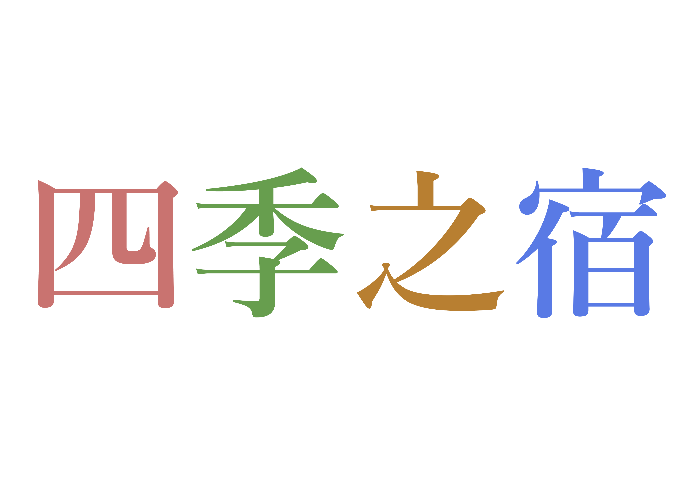

<footer class="footer">
  <div class="footer-inner">
    <div class="footer-top">
      <div class="footer-logo">
        <a href="index.html">
          
        </a>
      </div>
      <div class="footer-cta">
        <a href="preparation.html" class="footer-cta-button">ご宿泊予約</a>
        <a href="contact.html" class="footer-cta-button">お問い合わせ</a>
      </div>
      <div class="footer-nav">
        <div class="footer-mainnav">
          <a href="index.html">ページトップ</a>
          <a href="#about">四季の魅力</a>
          <a href="onsen.html">温泉</a>
          <a href="dish.html">お食事</a>
          <a href="room.html">客室</a>
          <a href="#access">アクセス</a>
          <a href="#contact">よくある質問</a>
        </div>
      </div>
    </div>
    <div class="footer-bottom">
      <div class="ToU">
        <a href="preparation.html">利用規約</a>
        <a href="preparation.html">個人情報保護方針</a>
        <a href="preparation.html">会社概要</a>
      </div>
      <div class="copyright">©2024 四季之宿 All Rights Reserved.</div>
    </div>
  </div>
</footer>